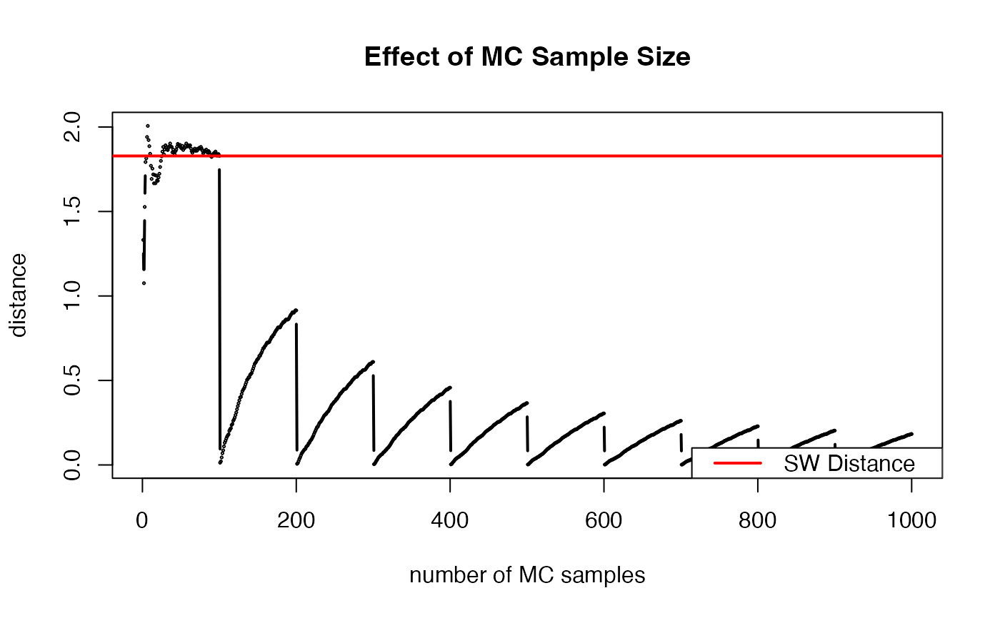

Sliced Wasserstein Distance
swdist.RdSliced Wasserstein (SW) Distance is a popular alternative to the standard Wasserstein distance due to its computational efficiency on top of nice theoretical properties. For the \(d\)-dimensional probability measures \(\mu\) and \(\nu\), the SW distance is defined as $$\mathcal{SW}_p (\mu, \nu) = \left( \int_{\mathbb{S}^{d-1}} \mathcal{W}_p^p ( \langle \theta, \mu\rangle, \langle \theta, \nu \rangle) d\lambda (\theta) \right)^{1/p},$$ where \(\mathbb{S}^{d-1}\) is the \((d-1)\)-dimensional unit hypersphere and \(\lambda\) is the uniform distribution on \(\mathbb{S}^{d-1}\). Practically, it is computed via Monte Carlo integration.
Value
a named list containing
- distance
\(\mathcal{SW}_p\) distance value.
- projdist
a length-
num_projvector of projected univariate distances.
References
Rabin J, Peyré G, Delon J, Bernot M (2012). “Wasserstein Barycenter and Its Application to Texture Mixing.” In Bruckstein AM, ter Haar Romeny BM, Bronstein AM, Bronstein MM (eds.), Scale Space and Variational Methods in Computer Vision, volume 6667, 435–446. Springer Berlin Heidelberg, Berlin, Heidelberg. ISBN 978-3-642-24784-2 978-3-642-24785-9, doi:10.1007/978-3-642-24785-9_37 .
Examples
# \donttest{
#-------------------------------------------------------------------
# Sliced-Wasserstein Distance between Two Bivariate Normal
#
# * class 1 : samples from Gaussian with mean=(-1, -1)
# * class 2 : samples from Gaussian with mean=(+1, +1)
#-------------------------------------------------------------------
# SMALL EXAMPLE
set.seed(100)
m = 20
n = 30
X = matrix(rnorm(m*2, mean=-1),ncol=2) # m obs. for X
Y = matrix(rnorm(n*2, mean=+1),ncol=2) # n obs. for Y
# COMPUTE THE SLICED-WASSERSTEIN DISTANCE
outsw <- swdist(X, Y, num_proj=100)
# VISUALIZE
# prepare ingredients for plotting
plot_x = 1:1000
plot_y = base::cumsum(outsw$projdist)/plot_x
# draw
opar <- par(no.readonly=TRUE)
plot(plot_x, plot_y, type="b", cex=0.1, lwd=2,
xlab="number of MC samples", ylab="distance",
main="Effect of MC Sample Size")
abline(h=outsw$distance, col="red", lwd=2)
legend("bottomright", legend="SW Distance",
col="red", lwd=2)

par(opar)
# }